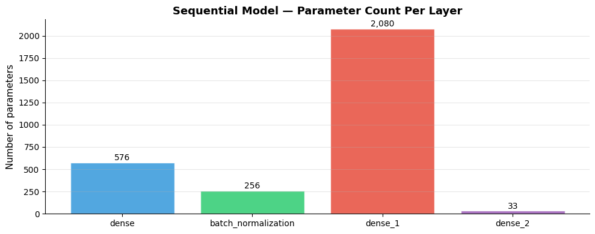
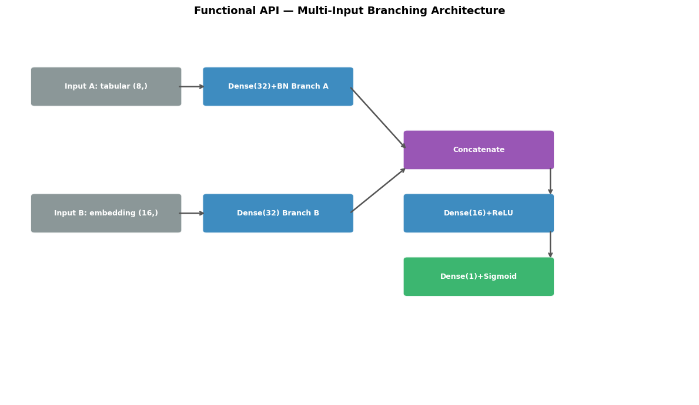
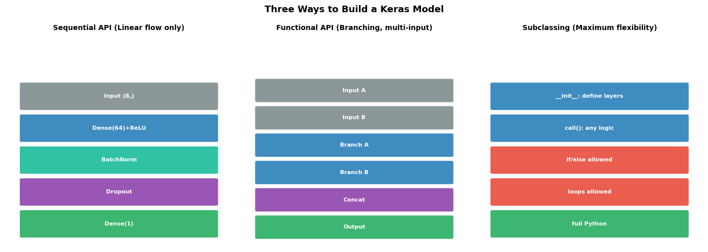

How does Keras build models?#
Topics: Sequential API · Functional API · Model Subclassing · Layers · Activations · When to Use Each API
1. Sequential API#
What it is#
Simplest way to build a model — linear stack of layers
Each layer has exactly one input and one output
Good for straightforward feedforward networks
When to use#
Simple architectures with no branching
Prototyping and quick experiments
Beginner-friendly, minimal boilerplate
When not to use#
Multiple inputs or outputs
Skip connections (ResNet-style)
Shared layers across branches
Any non-linear topology
Gotchas#
First layer must specify
input_shape— subsequent layers infer shapes automaticallyAdding layers after calling
model.summary()requires rebuilding
import tensorflow as tf
import numpy as np
import matplotlib.pyplot as plt
import matplotlib.patches as mpatches
print(f"TensorFlow version: {tf.__version__}")
# --- Sequential API ---
model = tf.keras.Sequential([
tf.keras.layers.Dense(64, activation='relu', input_shape=(8,)),
tf.keras.layers.BatchNormalization(),
tf.keras.layers.Dropout(0.3),
tf.keras.layers.Dense(32, activation='relu'),
tf.keras.layers.Dense(1, activation='sigmoid'),
])
model.summary()
# Forward pass
x = np.random.randn(4, 8).astype(np.float32)
out = model(x, training=False)
print(f"Input shape : {x.shape}")
print(f"Output shape: {out.shape}")
# Parameter count per layer
layer_names = [l.name for l in model.layers if l.count_params() > 0]
param_counts = [l.count_params() for l in model.layers if l.count_params() > 0]
fig, ax = plt.subplots(figsize=(10, 4))
colors = ['#3498DB', '#2ECC71', '#E74C3C', '#9B59B6'][:len(layer_names)]
bars = ax.bar(layer_names, param_counts, color=colors, alpha=0.85, edgecolor='white')
ax.set_ylabel('Number of parameters', fontsize=11)
ax.set_title('Sequential Model — Parameter Count Per Layer', fontsize=13, fontweight='bold')
ax.grid(True, alpha=0.3, axis='y')
ax.spines['top'].set_visible(False)
ax.spines['right'].set_visible(False)
for bar, val in zip(bars, param_counts):
ax.text(bar.get_x() + bar.get_width()/2, bar.get_height() + 5,
f'{val:,}', ha='center', va='bottom', fontsize=10)
plt.tight_layout()
plt.savefig('sequential_params.png', dpi=120, bbox_inches='tight')
plt.show()
WARNING: All log messages before absl::InitializeLog() is called are written to STDERR
I0000 00:00:1776953874.540901 3599 cudart_stub.cc:31] Could not find cuda drivers on your machine, GPU will not be used.
I0000 00:00:1776953874.587297 3599 cpu_feature_guard.cc:227] This TensorFlow binary is optimized to use available CPU instructions in performance-critical operations.
To enable the following instructions: AVX2 FMA, in other operations, rebuild TensorFlow with the appropriate compiler flags.
WARNING: All log messages before absl::InitializeLog() is called are written to STDERR
I0000 00:00:1776953876.157956 3599 cudart_stub.cc:31] Could not find cuda drivers on your machine, GPU will not be used.
TensorFlow version: 2.21.0
/opt/hostedtoolcache/Python/3.11.15/x64/lib/python3.11/site-packages/keras/src/layers/core/dense.py:107: UserWarning: Do not pass an `input_shape`/`input_dim` argument to a layer. When using Sequential models, prefer using an `Input(shape)` object as the first layer in the model instead.
super().__init__(activity_regularizer=activity_regularizer, **kwargs)
E0000 00:00:1776953877.407680 3599 cuda_platform.cc:52] failed call to cuInit: INTERNAL: CUDA error: Failed call to cuInit: UNKNOWN ERROR (303)
Model: "sequential"
┏━━━━━━━━━━━━━━━━━━━━━━━━━━━━━━━━━┳━━━━━━━━━━━━━━━━━━━━━━━━┳━━━━━━━━━━━━━━━┓ ┃ Layer (type) ┃ Output Shape ┃ Param # ┃ ┡━━━━━━━━━━━━━━━━━━━━━━━━━━━━━━━━━╇━━━━━━━━━━━━━━━━━━━━━━━━╇━━━━━━━━━━━━━━━┩ │ dense (Dense) │ (None, 64) │ 576 │ ├─────────────────────────────────┼────────────────────────┼───────────────┤ │ batch_normalization │ (None, 64) │ 256 │ │ (BatchNormalization) │ │ │ ├─────────────────────────────────┼────────────────────────┼───────────────┤ │ dropout (Dropout) │ (None, 64) │ 0 │ ├─────────────────────────────────┼────────────────────────┼───────────────┤ │ dense_1 (Dense) │ (None, 32) │ 2,080 │ ├─────────────────────────────────┼────────────────────────┼───────────────┤ │ dense_2 (Dense) │ (None, 1) │ 33 │ └─────────────────────────────────┴────────────────────────┴───────────────┘
Total params: 2,945 (11.50 KB)
Trainable params: 2,817 (11.00 KB)
Non-trainable params: 128 (512.00 B)
Input shape : (4, 8)
Output shape: (4, 1)

2. Functional API#
What it is#
Builds models as a directed acyclic graph (DAG) of layers
Each layer is called as a function on a tensor — more explicit control
Supports branching, merging, skip connections, multiple inputs/outputs
Key intuition#
You define the data flow explicitly:
x = layer(x)Then wrap inputs and outputs:
model = tf.keras.Model(inputs=..., outputs=...)Keras traces the graph and builds the model
When to use#
Multi-input or multi-output models
Skip connections (ResNet, U-Net)
Shared layers
Any non-linear architecture
Gotchas#
Must start from
tf.keras.Input()— not a plain numpy arrayModel is immutable after creation — redefine to change architecture
import tensorflow as tf
import numpy as np
import matplotlib.pyplot as plt
import matplotlib.patches as mpatches
# --- Functional API: multi-input model ---
# Input A: tabular features
input_a = tf.keras.Input(shape=(8,), name='tabular')
# Input B: embedding features
input_b = tf.keras.Input(shape=(16,), name='embedding')
# Branch A
x_a = tf.keras.layers.Dense(32, activation='relu')(input_a)
x_a = tf.keras.layers.BatchNormalization()(x_a)
# Branch B
x_b = tf.keras.layers.Dense(32, activation='relu')(input_b)
# Merge
merged = tf.keras.layers.Concatenate()([x_a, x_b])
x = tf.keras.layers.Dense(16, activation='relu')(merged)
output = tf.keras.layers.Dense(1, activation='sigmoid', name='output')(x)
model = tf.keras.Model(inputs=[input_a, input_b], outputs=output)
model.summary()
# Test forward pass
x_tab = np.random.randn(4, 8).astype(np.float32)
x_emb = np.random.randn(4, 16).astype(np.float32)
out = model([x_tab, x_emb], training=False)
print(f"Output shape: {out.shape}")
# Visualize branching architecture
fig, ax = plt.subplots(figsize=(12, 7))
ax.set_xlim(0, 12); ax.set_ylim(0, 9); ax.axis('off')
ax.set_title('Functional API — Multi-Input Branching Architecture', fontsize=13, fontweight='bold')
def box(ax, x, y, w, h, label, color):
rect = mpatches.FancyBboxPatch((x, y), w, h,
boxstyle='round,pad=0.07', facecolor=color, edgecolor='white',
linewidth=1.5, alpha=0.9)
ax.add_patch(rect)
ax.text(x+w/2, y+h/2, label, ha='center', va='center',
fontsize=9, fontweight='bold', color='white')
def arr(ax, x1, y1, x2, y2):
ax.annotate('', xy=(x2, y2), xytext=(x1, y1),
arrowprops=dict(arrowstyle='->', color='#555', lw=1.8))
box(ax, 0.5, 7.0, 2.5, 0.8, 'Input A: tabular (8,)', '#7F8C8D')
box(ax, 0.5, 4.0, 2.5, 0.8, 'Input B: embedding (16,)', '#7F8C8D')
box(ax, 3.5, 7.0, 2.5, 0.8, 'Dense(32)+BN Branch A', '#2980B9')
box(ax, 3.5, 4.0, 2.5, 0.8, 'Dense(32) Branch B', '#2980B9')
box(ax, 7.0, 5.5, 2.5, 0.8, 'Concatenate', '#8E44AD')
box(ax, 7.0, 4.0, 2.5, 0.8, 'Dense(16)+ReLU', '#2980B9')
box(ax, 7.0, 2.5, 2.5, 0.8, 'Dense(1)+Sigmoid', '#27AE60')
arr(ax, 3.0, 7.4, 3.5, 7.4)
arr(ax, 3.0, 4.4, 3.5, 4.4)
arr(ax, 6.0, 7.4, 7.0, 5.9)
arr(ax, 6.0, 4.4, 7.0, 5.5)
arr(ax, 9.5, 5.5, 9.5, 4.8); arr(ax, 9.5, 4.0, 9.5, 3.3)
plt.tight_layout()
plt.savefig('functional_api.png', dpi=120, bbox_inches='tight')
plt.show()
Model: "functional_1"
┏━━━━━━━━━━━━━━━━━━━━━┳━━━━━━━━━━━━━━━━━━━┳━━━━━━━━━━━━┳━━━━━━━━━━━━━━━━━━━┓ ┃ Layer (type) ┃ Output Shape ┃ Param # ┃ Connected to ┃ ┡━━━━━━━━━━━━━━━━━━━━━╇━━━━━━━━━━━━━━━━━━━╇━━━━━━━━━━━━╇━━━━━━━━━━━━━━━━━━━┩ │ tabular │ (None, 8) │ 0 │ - │ │ (InputLayer) │ │ │ │ ├─────────────────────┼───────────────────┼────────────┼───────────────────┤ │ dense_3 (Dense) │ (None, 32) │ 288 │ tabular[0][0] │ ├─────────────────────┼───────────────────┼────────────┼───────────────────┤ │ embedding │ (None, 16) │ 0 │ - │ │ (InputLayer) │ │ │ │ ├─────────────────────┼───────────────────┼────────────┼───────────────────┤ │ batch_normalizatio… │ (None, 32) │ 128 │ dense_3[0][0] │ │ (BatchNormalizatio… │ │ │ │ ├─────────────────────┼───────────────────┼────────────┼───────────────────┤ │ dense_4 (Dense) │ (None, 32) │ 544 │ embedding[0][0] │ ├─────────────────────┼───────────────────┼────────────┼───────────────────┤ │ concatenate │ (None, 64) │ 0 │ batch_normalizat… │ │ (Concatenate) │ │ │ dense_4[0][0] │ ├─────────────────────┼───────────────────┼────────────┼───────────────────┤ │ dense_5 (Dense) │ (None, 16) │ 1,040 │ concatenate[0][0] │ ├─────────────────────┼───────────────────┼────────────┼───────────────────┤ │ output (Dense) │ (None, 1) │ 17 │ dense_5[0][0] │ └─────────────────────┴───────────────────┴────────────┴───────────────────┘
Total params: 2,017 (7.88 KB)
Trainable params: 1,953 (7.63 KB)
Non-trainable params: 64 (256.00 B)
Output shape: (4, 1)

3. Model Subclassing#
What it is#
Most flexible approach — subclass
tf.keras.Modeland definecall()methodFull Python control over forward pass — can include conditionals, loops, custom logic
Similar to PyTorch’s
nn.Module
When to use#
Complex architectures with dynamic behavior
Research models where the forward pass logic is non-trivial
When you need full control (e.g. custom training steps)
When not to use#
Model is static and simple — Sequential or Functional is cleaner
Need
model.summary()with output shapes — subclassed models don’t show intermediate shapesNeed easy model saving — subclassed models are harder to serialize
Gotchas#
Define layers in
__init__, computation incall()call()receivestrainingargument — pass it to Dropout and BatchNormmodel.save()requiresSavedModelformat with subclassed models
import tensorflow as tf
import numpy as np
import matplotlib.pyplot as plt
# --- Model Subclassing ---
class MLP(tf.keras.Model):
def __init__(self, hidden_sizes, output_size, dropout_rate=0.3):
super().__init__()
self.hidden_layers = [
tf.keras.layers.Dense(h, activation='relu') for h in hidden_sizes
]
self.bn_layers = [
tf.keras.layers.BatchNormalization() for _ in hidden_sizes
]
self.dropout = tf.keras.layers.Dropout(dropout_rate)
self.output_layer = tf.keras.layers.Dense(output_size, activation='softmax')
def call(self, x, training=False):
for dense, bn in zip(self.hidden_layers, self.bn_layers):
x = dense(x)
x = bn(x, training=training)
x = self.dropout(x, training=training)
return self.output_layer(x)
model = MLP(hidden_sizes=[64, 32], output_size=3)
x = np.random.randn(4, 8).astype(np.float32)
out = model(x, training=False)
print(f"Output shape: {out.shape}")
print(f"Output (probs): {out.numpy().round(3)}")
# Build model to see parameters
model.build(input_shape=(None, 8))
model.summary()
# Compare API styles visually
fig, axes = plt.subplots(1, 3, figsize=(14, 5))
configs = [
('Sequential API', ['Input (8,)', 'Dense(64)+ReLU', 'BatchNorm', 'Dropout', 'Dense(1)'],
['#7F8C8D', '#2980B9', '#1ABC9C', '#8E44AD', '#27AE60'], 'Linear flow only'),
('Functional API', ['Input A', 'Input B', 'Branch A', 'Branch B', 'Concat', 'Output'],
['#7F8C8D', '#7F8C8D', '#2980B9', '#2980B9', '#8E44AD', '#27AE60'], 'Branching, multi-input'),
('Subclassing', ['__init__: define layers', 'call(): any logic', 'if/else allowed', 'loops allowed', 'full Python'],
['#2980B9', '#2980B9', '#E74C3C', '#E74C3C', '#27AE60'], 'Maximum flexibility'),
]
for ax, (title, layers, colors, note) in zip(axes, configs):
ax.set_xlim(0, 4); ax.set_ylim(0, len(layers)+1); ax.axis('off')
ax.set_title(f'{title} ({note})', fontsize=10, fontweight='bold')
for i, (layer, color) in enumerate(zip(reversed(layers), reversed(colors))):
rect = mpatches.FancyBboxPatch((0.3, i*0.9+0.3), 3.4, 0.7,
boxstyle='round,pad=0.05', facecolor=color, edgecolor='white', linewidth=1.5, alpha=0.9)
ax.add_patch(rect)
ax.text(2.0, i*0.9+0.65, layer, ha='center', va='center',
fontsize=8, fontweight='bold', color='white')
plt.suptitle('Three Ways to Build a Keras Model', fontsize=13, fontweight='bold')
plt.tight_layout()
plt.savefig('keras_apis.png', dpi=120, bbox_inches='tight')
plt.show()
Output shape: (4, 3)
Output (probs): [[0.476 0.16 0.364]
[0.355 0.128 0.518]
[0.576 0.183 0.241]
[0.564 0.17 0.266]]
Model: "mlp"
┏━━━━━━━━━━━━━━━━━━━━━━━━━━━━━━━━━┳━━━━━━━━━━━━━━━━━━━━━━━━┳━━━━━━━━━━━━━━━┓ ┃ Layer (type) ┃ Output Shape ┃ Param # ┃ ┡━━━━━━━━━━━━━━━━━━━━━━━━━━━━━━━━━╇━━━━━━━━━━━━━━━━━━━━━━━━╇━━━━━━━━━━━━━━━┩ │ dense_6 (Dense) │ (4, 64) │ 576 │ ├─────────────────────────────────┼────────────────────────┼───────────────┤ │ dense_7 (Dense) │ (4, 32) │ 2,080 │ ├─────────────────────────────────┼────────────────────────┼───────────────┤ │ batch_normalization_2 │ (4, 64) │ 256 │ │ (BatchNormalization) │ │ │ ├─────────────────────────────────┼────────────────────────┼───────────────┤ │ batch_normalization_3 │ (4, 32) │ 128 │ │ (BatchNormalization) │ │ │ ├─────────────────────────────────┼────────────────────────┼───────────────┤ │ dropout_1 (Dropout) │ ? │ 0 │ ├─────────────────────────────────┼────────────────────────┼───────────────┤ │ dense_8 (Dense) │ (4, 3) │ 99 │ └─────────────────────────────────┴────────────────────────┴───────────────┘
Total params: 3,139 (12.26 KB)
Trainable params: 2,947 (11.51 KB)
Non-trainable params: 192 (768.00 B)

Interview Q&A#
Sequential vs Functional — which should you default to?
Functional API for most cases — more flexible without much extra code
Sequential for the simplest prototypes where no branching is needed
What is the difference between model(x) and model.predict(x)?
model(x)— eager execution, returns a tensor, runs in training mode by defaultmodel.predict(x)— batched inference, returns NumPy array, always runs in inference modeUse
model.predict()for large datasets,model(x, training=False)for single batches
Why pass training=True/False to call()?
Dropout and BatchNorm behave differently during training vs inference
training=True→ Dropout active, BN uses batch statstraining=False→ Dropout off, BN uses running stats
Gotchas#
model.summary()only shows output shapes for Sequential and Functional modelsSubclassed models must call
model.build()or pass data beforesummary()worksAlways pass
trainingargument through all nested layers in subclassed models